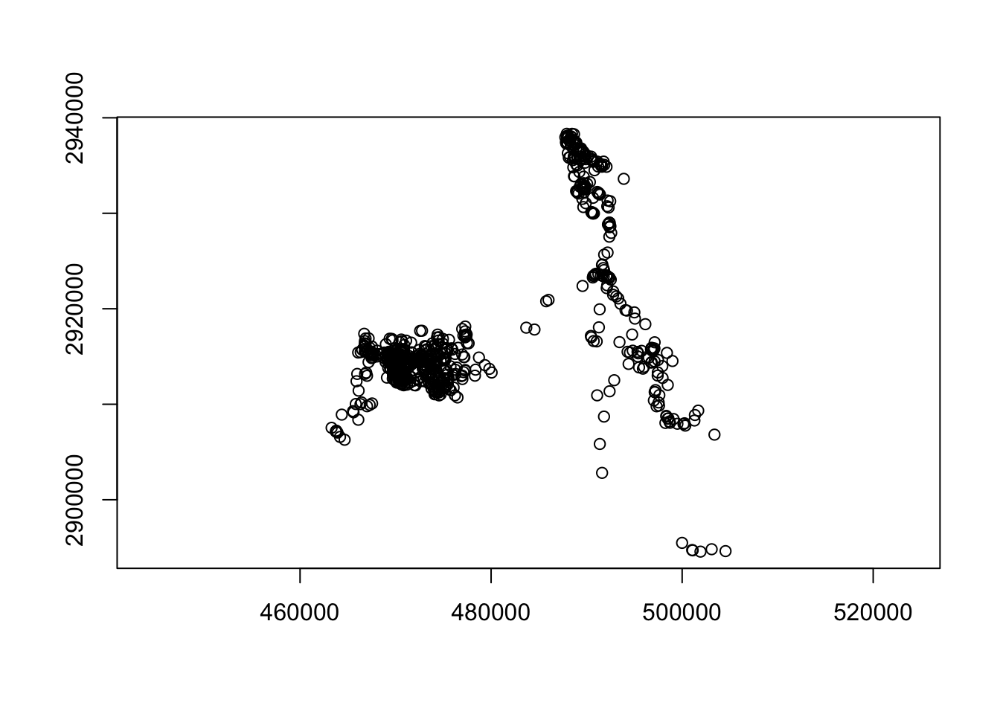

26 Movement-based Kernel Density Estimation (MKDE)
If we want to take both BBMM and KDE to a higher level we can incorporate movement-based estimators of home range. Movement-based Kernel Density Estimation (MKDE) incorporates movements trajectories and habitat components of the landscape your animal occupies (Benhamou 2011, Benhamou and Cornelis 2010). This method requires a habitat layer and the adehabitatHR package requires that no duplicate entries exist for a given date so makes estimates of home range with GPS data problematic. Furthermore, after tirelessly trying this method for days using data with time intervals, we changed to data that had dates but then had to remove duplicates. If you have worked out all of these issues, you can skip ahead to MKDE estimates with your data starting at Step 6.
1. Open the script “MKDEcat_script.Rmd” and run code directly from the script
2. First we need to load the packages needed for the exercise
3. Now let’s have a separate section of code to include projection information we will use throughout the exercise. In previous versions, these lines of code were within each block of code
4. We need to import our locations and get them in the form we need for this exercise before we can move forward
panther<-read.csv("data/pantherjitter.csv",header=T)
panther$CatID <- as.factor(panther$CatID)
#We first need to use the original dataset to calculate time between locations
panther$NewTime <- str_pad(panther$TIMEET2,4, pad= "0")
panther$NewDate <- paste(panther$DateET2,panther$NewTime)
#Used to sort data in code below for all deer
panther$DT <- as.POSIXct(strptime(panther$NewDate, format='%Y %m %d %H%M'))
#Sort Data
panther <- panther[order(panther$CatID, panther$DT),]
#TIME DIFF NECESSARY IN BBMM CODE
timediff <- diff(panther$DT)*60
# remove first entry without any difference
panther <- panther[-1,]
panther$timelag <-as.numeric(abs(timediff))
cat143<-subset(panther, panther$CatID == "143")
cat143 <- cat143[-1,] #Remove first record with wrong timelag
cat143$CatID <- droplevels(cat143$CatID)
#Remove outlier locations
coords <- st_as_sf(cat143, coords = c("X", "Y"), crs = utm.crs)
plot(st_geometry(coords),axes=T)
cat.albers <- st_transform(coords, albers.crs)NOTE: Two issues at this step held me back with the method for weeks so we will stress them here:
Extent of the raster layer selected - Although Extent was the lesser problem, it still needs to be address for several reasons. If the extent is too large or raster cell size too small then processing time increases. Although we would not really want to spend the time to clip raster habitat layers for each animal, you may need to have separate rasters for different areas of your study site to cut down on processing time. More importantly, animals need to be within the same grid for analysis using MKDE/BRB home range estimates. This will become more apparent later but preparing habitat or landscape layers for all animals using the same habitat extent will save time in the end.
Projection of the raster layer and locations - Even we missed this one with all our experiences and constant issues with data layers in different projections. We assumed that defining the projection with R would take care of this issue but we could not have been more wrong. So before we move forward, we want to demonstrate our thought processes here and how we solved this problem.
5. If we get some NA errors because our grid does not encompass our panther locations then we can expand the grid size extending beyond our locations using methods in an earlier exercise.
# Create vectors of the x and y points using boundary box created around deer locations
bb1 <- st_bbox(cat.albers)
increment = 2000
minx=(min(bb1$xmin)-(increment))
maxx=(max(bb1$xmax)+(increment))
miny=(min(bb1$ymin)-(increment))
maxy=(max(bb1$ymax)+(increment))
my_bbox = st_bbox(c(xmin = minx, xmax = maxx,
ymin = miny, ymax = maxy),
crs = 5070)
boundary <- st_as_sfc(my_bbox)6. So the raster layer that is included in this exercise is in UTM Zone 17. Now, import the raster layer to have layers in the same projection.
FLnlcd <- get_nlcd(template=boundary, year = 2006, label = 'Florida',dataset = "landcover", force.redo = T)
nlcd.df <- as.data.frame(FLnlcd, xy=FALSE)
nlcd.df2 <- as.data.frame(FLnlcd, xy=TRUE)
nlcd.xy <- data.frame(x=nlcd.df2$x,y=nlcd.df2$y)
##Cast over to SPxDF
habitat <- SpatialPixelsDataFrame(nlcd.xy,nlcd.df)
crs(habitat) <- st_crs(FLnlcd)$proj4string#"NAD83 / Conus Albers"
#plot(habitat)
#Create an ltraj trajectory object.
ltraj <- as.ltraj(st_coordinates(cat.albers), cat.albers$DT, id = cat.albers$Sex, burst = cat.albers$Sex,
typeII = TRUE)
#plot(ltraj, spixdf=habitat)
#writeRaster(FLnlcd,"FL_nlcd.tif",format="GTiff",datatype = 'INT1U',overwrite=T)7. With the same projections for our 2 data layers, we can move forward. First we need to create ltraj as in Chapter 3 and use some additional code to overlay the trajectory onto the Spatial Pixels Data Frame using the command “spixdf” as in the code below that results in Fig. 4.11. Basically, if this works then we are on the right path to moving forward with MKDE.
# FLnlcd2 <- rast("data/FL_nlcd.tif")
# FLnlcd2 <- project(FLnlcd2,FLnlcd,method="near")
# nlcd.df2 <- as.data.frame(FLnlcd2, xy=FALSE)
# nlcd.df3 <- as.data.frame(FLnlcd2, xy=TRUE)
# nlcd.xy <- data.frame(x=nlcd.df3$x,y=nlcd.df3$y)
# ##Cast over to SPxDF
# habitat2 <- SpatialPixelsDataFrame(nlcd.xy,nlcd.df)
#
# #Create an ltraj trajectory object.
# ltraj <- as.ltraj(st_coordinates(cat.albers), cat.albers$DT, id = cat.albers$Sex, burst = cat.albers$Sex,
# typeII = TRUE)
# plot(ltraj, spixdf=habitat)8. Now identify habitats that can and can not be used by panthers
#Be sure to do this step after plotting ltraj onto spixdf or won't work!
#This step just builds a "fake" habitat map with habitat=1
fullgrid(habitat) <- TRUE
hab <- habitat
hab[[1]] <- as.numeric(!is.na(hab[[1]]))
#This step is needed to convert SpatialGrid to SpatialPixels for use in "ud" estimation
#if needed
#"habitat" in "grid=habitat" must be of class SpatialPixels
fullgrid(hab) <- FALSE
class(hab)9. Now we can begin to create Movement-based KDEs using biased random bridges (BRBs)
#Assign parameter values for BRB
# Parameters for the Biased Random Bridge Kernel approach
tmax <- 1*(24*60*60) + 1 #set the maximum time between locations to be just more than 1 day
lmin <- 50 #locations less than 50 meters apart are considered inactive.
hmin <- 100 #arbitrarily set to be same as hab grid cell resolution
#Diffusion component for each habitat type using plug-in method
vv<- BRB.D(ltraj, Tmax = tmax, Lmin = lmin, habitat = hab)
vv
ud <- BRB(ltraj, D = vv, Tmax = tmax, Lmin = lmin, hmin=hmin, grid = hab, b=TRUE,
extent=0.1, tau = 300)
ud
#Address names in ud by assigning them to be the same as the ids in ltraj
#Must be done before using "getverticeshr" function
names(ud) <- id(ltraj) 10. Create contours using getverticeshr to display or export as shapefiles (Fig. 4.15).
ver1_99 <- getverticeshr(ud, percent=99, standardize = TRUE, whi = id(ltraj))
plot(ver1_99)
#ver1_95 <- getverticeshr(ud, percent=95, standardize = TRUE, whi = id(ltraj))
#ver1_90 <- getverticeshr(ud, percent=90, standardize = TRUE, whi = id(ltraj))
#ver1_80 <- getverticeshr(ud, percent=80, standardize = TRUE, whi = id(ltraj))
ver1_50 <- getverticeshr(ud, percent=50, standardize = TRUE, whi = id(ltraj))
plot(ver1_99)
#plot(ver1_95, add=T)
plot(ver1_50, add=T)11. Now let’s create a new UD using an actual habitat layer that has more than “used/unused” such as the 7 habitat categories from original dataset
#Start by importing the habitat layer again and run the following
m <- c(0, 19, 1, 20, 39, 2, 40, 50, 3, 51, 68, 4, 69,79, 5, 80, 88, 6, 89, 99, 7)
rclmat <- matrix(m, ncol=3, byrow=TRUE)
rc <- classify(FLnlcd, rclmat)
rc.df <- as.data.frame(rc, xy=FALSE)
rc.df2 <- as.data.frame(rc, xy=TRUE)
rc.xy <- data.frame(x=rc.df2$x,y=rc.df2$y)
##Cast over to SPxDF
habitat2 <- SpatialPixelsDataFrame(rc.xy,rc.df)
crs(habitat2) <- st_crs(FLnlcd)$proj4string
plot(habitat2)
plot(ltraj, spixdf=habitat2)
#CODE TO CONDUCT BRB
#Assign parameter values for BRB
# Parameters for the Biased Random Bridge Kernel approach
tmax <- 1*(24*60*60) + 1 #set the maximum time between locations to be just more than 1 day
lmin <- 50 #locations less than 50 meters apart are considered inactive.
hmin <- 100 #arbitrarily set to be same as hab grid cell resolution
#Diffusion component for each habitat type using plug-in method
vv2<- BRB.D(ltraj, Tmax = tmax, Lmin = lmin, habitat = habitat2)
vv2
ud2 <- BRB(ltraj, D = vv2, Tmax = tmax, Lmin = lmin, hmin=hmin, habitat = habitat2, b=TRUE,
extent=0.1, tau = 300, same4all=FALSE)
names(ud2) <- id(ltraj)
ver2_99 <- getverticeshr(ud2, percent=99, standardize = TRUE, whi = id(ltraj))
#ver2_95 <- getverticeshr(ud2, percent=95, standardize = TRUE, whi = id(ltraj))
#ver2_90 <- getverticeshr(ud2, percent=90, standardize = TRUE, whi = id(ltraj))
#ver2_80 <- getverticeshr(ud2, percent=80, standardize = TRUE, whi = id(ltraj))
ver2_50 <- getverticeshr(ud2, percent=50, standardize = TRUE, whi = id(ltraj))12. Now let’s create a new UD using an actual habitat layer that has more than “used/unused” such as the 4 habitat categories from original dataset
#4 habitats instead of the 7 above with water, open, and forested
m1 <- c(0,39, 1, 40, 68, 2, 69,88, 3, 89, 99, 4)
rclmat1 <- matrix(m1, ncol=3, byrow=TRUE)
rc1 <- classify(FLnlcd, rclmat1)
rc1.df <- as.data.frame(rc1, xy=FALSE)
rc1.df2 <- as.data.frame(rc1, xy=TRUE)
rc1.xy <- data.frame(x=rc1.df2$x,y=rc1.df2$y)
##Cast over to SPxDF
habitat3 <- SpatialPixelsDataFrame(rc1.xy,rc1.df)
crs(habitat3) <- st_crs(FLnlcd)$proj4string
plot(habitat3)
plot(ltraj, spixdf=habitat3)
#Diffusion component for each habitat type using plug-in method
vv3<- BRB.D(ltraj, Tmax = tmax, Lmin = lmin, habitat = habitat3)
vv3
ud3 <- BRB(ltraj, D = vv3, Tmax = tmax, Lmin = lmin, hmin=hmin, habitat = habitat3, b=TRUE, extent=0.1, tau = 300, same4all=FALSE)
names(ud3) <- id(ltraj)
ver3_99 <- getverticeshr(ud3, percent=99, standardize = TRUE, whi = id(ltraj))
#ver3_95 <- getverticeshr(ud3, percent=95, standardize = TRUE, whi = id(ltraj))
#ver3_80 <- getverticeshr(ud3, percent=80, standardize = TRUE, whi = id(ltraj))
ver3_50 <- getverticeshr(ud3, percent=50, standardize = TRUE, whi = id(ltraj))15. Now we will plot these for comparison with the habitat layer differing by each analysis.
par(mfrow=c(1,3))
plot(ver1_99,main="mKDE no habitat",xlab="X", ylab="Y", font=1, cex=0.8, axes=T)
#plot(ver1_95, lty=6, add=TRUE)
#plot(ver1_90, add=TRUE)
#plot(ver1_80, add=TRUE)
plot(ver1_50, col="red",add=TRUE)
points(cat.albers, pch=1, cex=0.5)
plot(ver2_99,main="mKDE 7 habitats",xlab="X", ylab="Y", font=1, cex=0.8, axes=T)
#plot(ver2_95, lty=6, add=TRUE)
#plot(ver2_90, add=TRUE)
#plot(ver2_80, add=TRUE)
plot(ver2_50,col="red", add=TRUE)
points(cat.albers, pch=1, cex=0.5)
plot(ver3_99,main="mKDE 4 habitats",xlab="X", ylab="Y", font=1, cex=0.8, axes=T)
#plot(ver3_95, lty=6, add=TRUE)
#plot(ver3_80, add=TRUE)
plot(ver3_50,col="red", add=TRUE)
points(cat.albers, pch=1, cex=0.5)